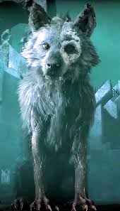

Padres: Loki: El dios del engaño, conocido por su papel de creador de caos. Angrboda: Una giganta de Jötunheim, madre de criaturas monstruosas. Hermanos: Jörmungandr: La Serpiente de Midgard, destinada a enfrentarse a Thor. Hel: Gobernante del Helheim, el reino de los muertos.
Criado por los Æsir: Los dioses Æsir descubrieron a Fenrir en Jötunheim y, temerosos de su tamaño y poder, lo llevaron a Asgard para vigilarlo mientras crecía. Crecimiento y Temor Fenrir creció rápidamente, alcanzando un tamaño y fuerza descomunales. Los dioses, preocupados por las profecías que predecían que causaría grandes destrucciones, comenzaron a buscar formas de controlarlo. Las Ataduras de Fenrir
Primeras ataduras: Los dioses intentaron encadenarlo con fuertes lazos, pero Fenrir rompió cada uno con facilidad.
Gleipnir, la atadura mágica: Los enanos forjaron una cuerda mágica llamada Gleipnir, hecha con ingredientes imposibles como: El sonido de las pisadas de un gato. La barba de una mujer. Las raíces de una montaña. El aliento de un pez. La saliva de un pájaro. Aunque parecía débil, Gleipnir era irrompible.
La trampa: Los dioses desafiaron a Fenrir a probar su fuerza intentando romper Gleipnir. Sospechando un engaño, Fenrir exigió que uno de los dioses pusiera su mano en su boca como garantía de buena fe. Tyr, el dios de la guerra, aceptó el desafío. Cuando Fenrir no pudo romper Gleipnir, mordió la mano de Tyr, arrancándola.
Encadenamiento final: Una vez atado, los dioses lo fijaron a una roca llamada Gjöll y colocaron una espada en su hocico para mantenerlo abierto. Su saliva formó el río Ván, y Fenrir permaneció encadenado, esperando su liberación en el Ragnarök. Fenrir y el Ragnarök
Liberación: Según las profecías, Fenrir se libera de sus ataduras durante el Ragnarök, marcando el inicio del fin del mundo.
Batalla con Odín: Fenrir devora a Odín, el líder de los dioses, durante la batalla final. Este acto simboliza la destrucción del orden establecido.
Muerte de Fenrir: Después de matar a Odín, Fenrir es derrotado por Víðarr, el hijo de Odín. Víðarr pisa la mandíbula inferior de Fenrir con su bota mágica y desgarra su hocico, vengando a su padre. Simbolismo de Fenrir
Caos y destrucción: Fenrir representa las fuerzas incontrolables de la naturaleza y el destino inevitable, aspectos fundamentales en la mitología nórdica.
Destino y profecía: Los intentos de los dioses por evitar su destino (la profecía de que Fenrir mataría a Odín) reflejan el tema nórdico de que el destino es ineludible.
Ambigüedad moral: Aunque Fenrir es visto como una amenaza, también es una víctima de la manipulación de los dioses, lo que lo convierte en una figura trágica.
Literatura y cine: Fenrir aparece en numerosas adaptaciones modernas, como en American Gods de Neil Gaiman y otros relatos inspirados en la mitología nórdica.
Videojuegos: En juegos como God of War y Assassin's Creed: Valhalla, Fenrir es representado como una criatura poderosa y majestuosa.
Simbolismo contemporáneo: Fenrir es un símbolo de fuerza, rebelión y la lucha contra un destino inevitable. Su imagen es popular en tatuajes y arte moderno.
Fenrir no solo es un símbolo de destrucción, sino también una representación de la injusticia. Su historia muestra cómo el temor de los poderosos (los dioses) puede llevar a actos de opresión y cómo la resistencia frente al destino es un tema universal. Su lugar en el Ragnarök asegura que, aunque sea derrotado, su impacto será eterno.